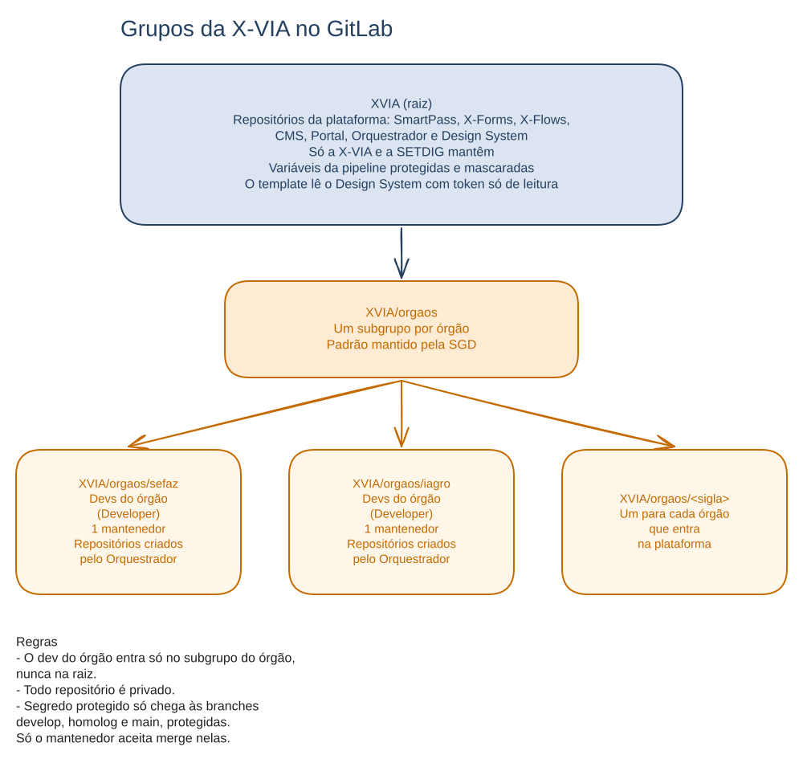

Quem entra, onde entra e o que pode fazer no GitLab.
Validada com a X-VIA (Victor Carnaval) em 25/11/2026.
XVIA vê todos os repositórios da plataforma, inclusive o código do SmartPass, do CMS e do Portal.
Cada órgão tem o seu espaço no GitLab.
A plataforma fica com a X-VIA e a SETDIG.

XVIA/orgaos/<sigla>CSI-EASTXVIA ou no subgrupo de outro órgão.develop, homolog ou main. Só o mantenedor.read_package_registry).| Preciso de | Procure |
|---|---|
| Usuário no GitLab ou acesso ao subgrupo | CSI-EAST (Caio), pela carta de serviço |
| Aceite de merge | Mantenedor do subgrupo do órgão |
| Orquestrador, template ou pipeline | X-VIA (Victor Carnaval) |
| Componentes do Design System | UCQI (Thereza e Bruno) |
| Dúvida sobre a regra | SGD (SETDIG) |
Saiu alguém da equipe? O órgão avisa a CSI-EAST para retirar o acesso.
Aprovar a governança para apresentar às equipes da CSIC.
Regra completa: guia de padrão de serviço › Governança